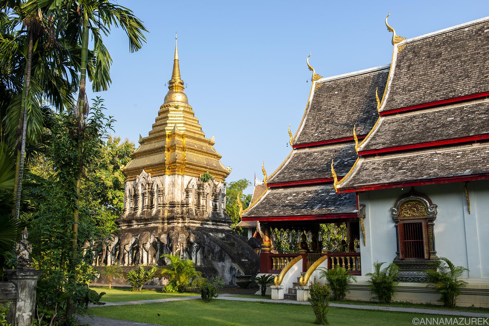
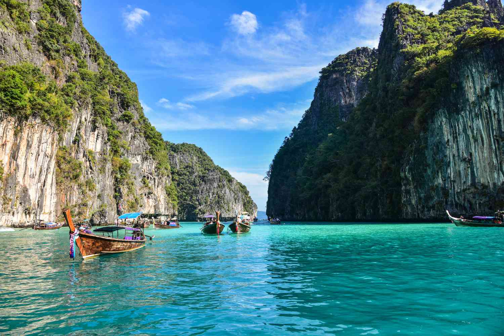
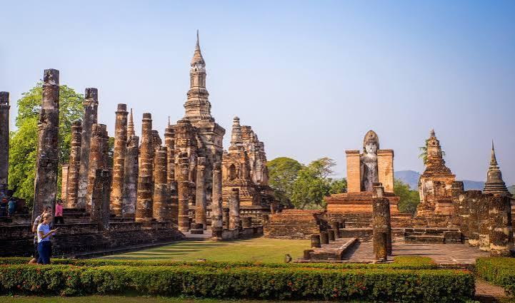
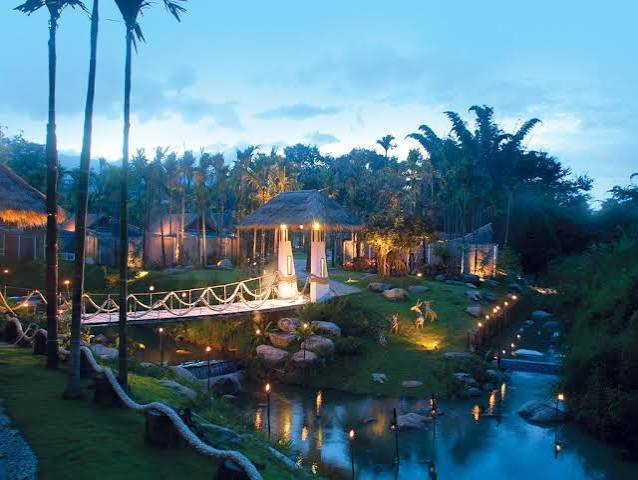
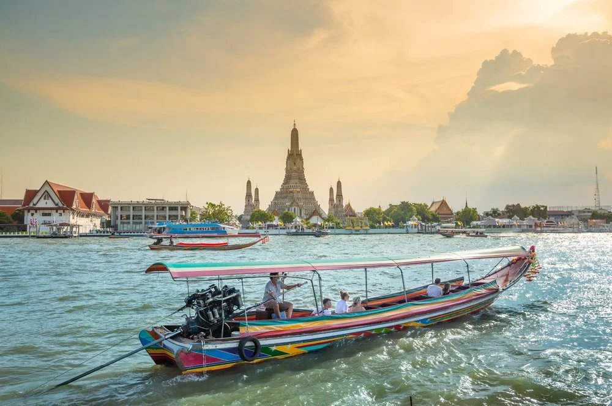
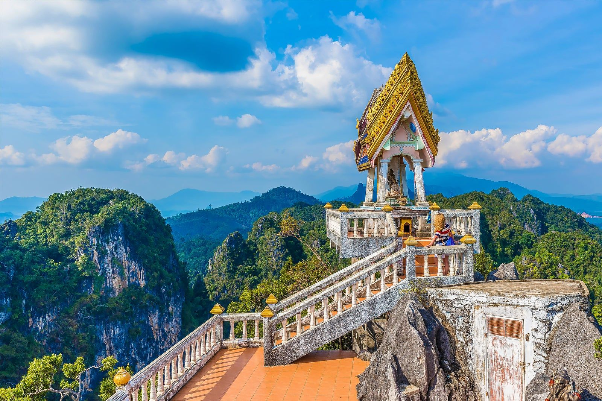
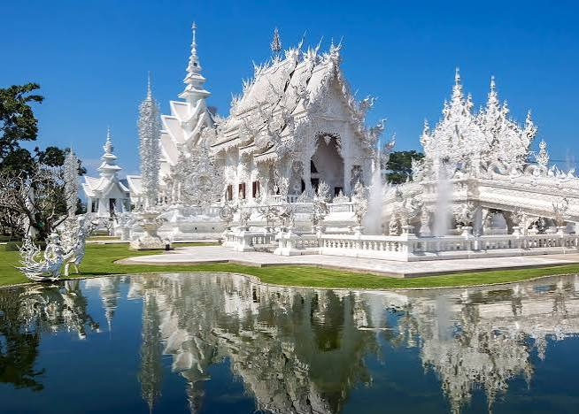
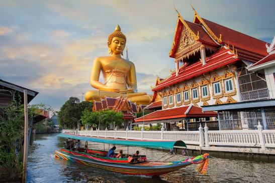
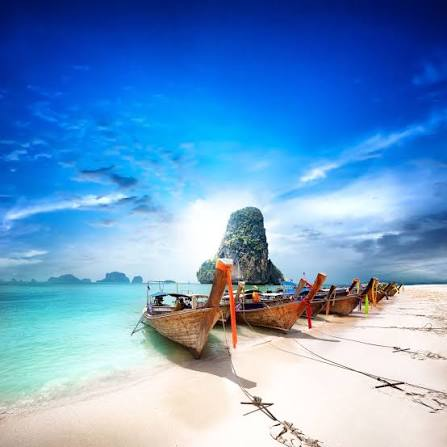
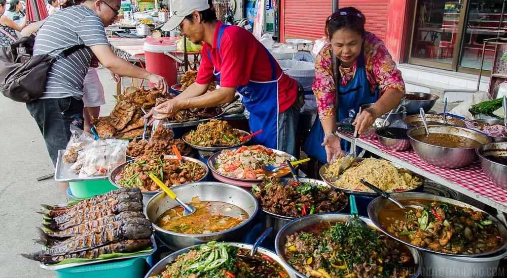

Thailand has many places to visit once you go there, You can explore the city of Bangkok and try street food! SukhoThai has historical temple ruins to check out. Be sure to take a boat tour on the historical Chao Phraya River and see the beautiful city of Bangkok in the evening!
Thailand has multiple coastline beaches that you cannot miss! Be sure to stop by Phuket and take a boat on the crystal clear water and go for a swim! If you want to explore other beaches be sure to visit the Phi Phi Islands which are Maya Bay and Nui Beach, clearwater areas surrounded by green towering cliffs! If you wish to avoid crowds go early, be sure to also watch the sunset because Phuket is in the west.
The historical temples in Thailand are not worth missing! You can learn they history of the area and what the main purpose of the golden statues were. Remember to take some gorgoeus photos of the historical landmarks at night! Bangkok also has some history to learn about, you can take a boat tour on The Chao Phraya River and see along the city of Bangkok.